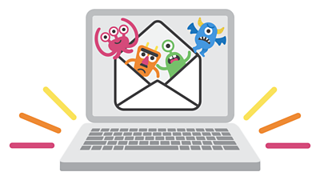

Tipos de Malware

- VIRUS:
- Son programas que al ejecutarlos infectan tu computadora. Se pueden propagar por la red.
- GUSANOS:
- Son programas que infectan tu computadora cuando entras a una página en internet que no es segura sin necesidad de ejecutarlos Usan la internet para propagarse.
- TROYANOS:
- Son archivos que parecen comunes y originales pero cuando los abrís infectan tu computadora. A diferencia de los virus y los gusanos, los troyanos suelen crear un acceso oculto para administrar tu equipo en forma remota.
- RANSOMWARE:
- Son programas que bloquean tu computadora cuando los ejecutas. Para recuperar el control hay que pagar un rescate, generalmente en bitcoins.
- SPYWARE:
- Son programas que tienen como objetivo espiar y robarte información.
- ADWARE:
- Son programas que muestran publicidad a través de pantallas que se abren solas. Pueden robar tu información personal sin permiso.
- SCAREWARE:
- Son correos electrónicos, mensajes o avisos que te engañan para que descargues programas maliciosos y los instales o para que visites sitios. Por ejemplo: “Tu PC está infectada. Baja este antivirus”.
- CRYPTOJACKING:
- Son programas que usan sin tu permiso tu computadora para obtener y generar (minar) criptomonedas.
- KEYLOGGER:
- Son programas que registran todas las pulsaciones de las teclas de tu computadora o teléfono. Pueden guardar todo lo que escribiste en un archivo de texto, incluso tus contraseñas.
- ROOTKITS:
- Son programas que permiten a personas no autorizadas entrar a tu computadora o teléfono.
- BOTNET:
- Son programas que usan tu computadora para atacar páginas de internet o enviar spam. Se llaman “PCs zombis”.